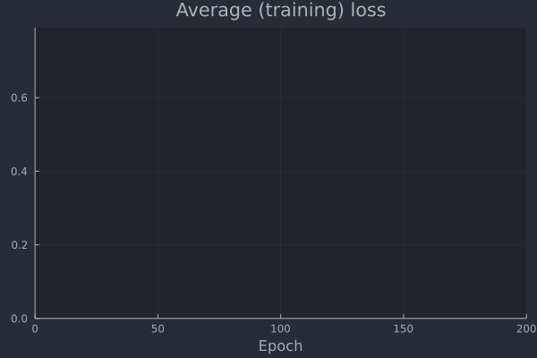
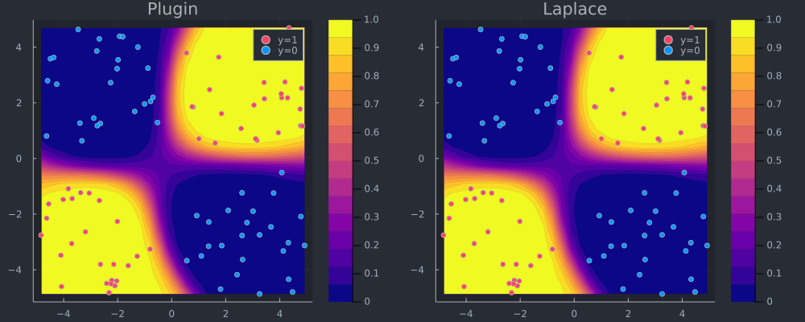

Bayesian Logistic Regression
# Import libraries.
using Flux, Plots, Random, PlotThemes, Statistics, BayesLaplace
theme(:juno)We will use synthetic data with linearly separable samples:
# Number of points to generate.
xs, y = toy_data_linear(100)
X = hcat(xs...); # bring into tabular format
data = zip(xs,y);Logisitic regression with weight decay can be implemented in Flux.jl as a single dense (linear) layer with binary logit crossentropy loss:
nn = Chain(Dense(2,1))
λ = 0.5
sqnorm(x) = sum(abs2, x)
weight_regularization(λ=λ) = 1/2 * λ^2 * sum(sqnorm, Flux.params(nn))
loss(x, y) = Flux.Losses.logitbinarycrossentropy(nn(x), y) + weight_regularization()The code below simply trains the model. After about 50 training epochs training loss stagnates.
using Flux.Optimise: update!, ADAM
opt = ADAM()
epochs = 50
avg_loss(data) = mean(map(d -> loss(d[1],d[2]), data))
using Plots
anim = Animation()
plt = plot(ylim=(0,avg_loss(data)), xlim=(0,epochs), legend=false, xlab="Epoch")
avg_l = []
for epoch = 1:epochs
for d in data
gs = gradient(params(nn)) do
l = loss(d...)
end
update!(opt, params(nn), gs)
end
avg_l = vcat(avg_l,avg_loss(data))
plot!(plt, avg_l, color=1, title="Average (training) loss")
frame(anim, plt)
end
gif(anim, "www/nn_training.gif");
Laplace appoximation
Laplace approximation for the posterior predictive can be implemented as follows:
la = laplace(nn, λ=λ, subset_of_weights=:last_layer)
fit!(la, data);
p_plugin = plot_contour(X',y,la;title="Plugin",type=:plugin);
p_laplace = plot_contour(X',y,la;title="Laplace");The plot below shows the resulting posterior predictive surface for the plugin estimator (left) and the Laplace approximation (right).
# Plot the posterior distribution with a contour plot.
plt = plot(p_plugin, p_laplace, layout=(1,2), size=(1000,400))
savefig(plt, "www/posterior_predictive.png")